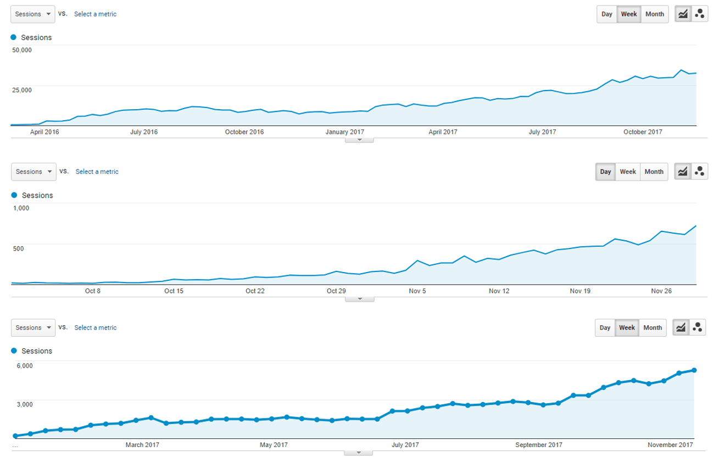

What We Do
Corvelay Media is a two-man shop focusing on editorial link building and search engine optimization. We do:
- Technical SEO audits + optimization
- Editorial link building and content creation
Technical SEO Audits
The way a person views your website and the way a search engine views your site are not the same. The search engines read the code on the backend (the html). If this code is not properly formatted and structured, it will be confusing to the search engine (ie. google) even if it is clear and legible to the human viewer. Lining up these two 'views' is important because a site that cannot be read by search engines will not be ranked appropriately.
Additionally, finding the right keyword opportunities for your site is crucial to being in the right SERPS (search engine result pages). If you are missing out on relevant search terms for your website, you are not being found by potential customers.
Editorial Link Building
Our ability to get PR level links, our understanding of who is searching what and where, and the ability to understand how your website is read by visitors as well as search engines allows us to rank and increase meaningful traffic to your site.
We have a straightforward and time-tested strategy for improving a website's ranking in search engines and getting more organic traffic.
- First, we find the search terms (ie. keywords) that are most beneficial for you to rank for. We take into account the goals of your business and the competitiveness of various SERPS. What are competitor sites ranking for? Where is the focus? What are the short-term and the long-term opportunities?
- Next, we create unique, valuable on-site content that is helpful, engaging and appropriate for your potential visitors.
- Lastly, we reach out to our network of journalists and writers to get high-quality, relevant and authoritative links to your site. High quality links are the basis for how search engines determine the 'authority' of your site, and thus it's position in search results.
A small sample of editorials where our clients get published links

We don't do everything, but when it comes to increased organic traffic, we believe we do it better than anyone else.
About Us
Corvelay Media's origins are in pay per call affiliate marketing. We developed and ranked websites that now generate thousands of calls a day for lead brokers in industries ranging from dating to home services. Prior to that, we worked independently doing in-house SEO and advertising research. Here are some screen shots from google analytics showing organic traffic improvements over time for three different websites we built and managed.
